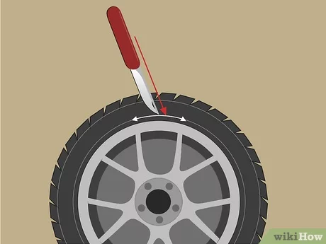
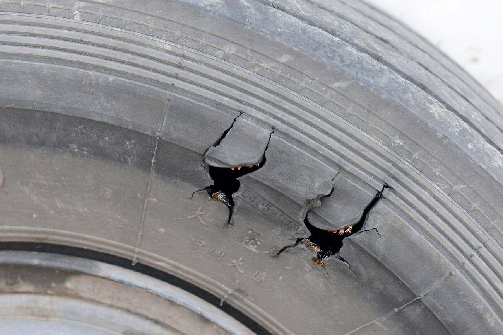
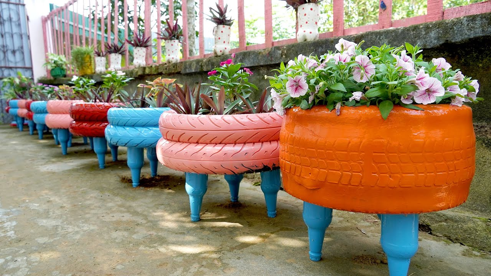

1.Clean the Tire: Thoroughly clean the tire to remove any dirt or debris. Use soapy water and a scrub brush to clean both the inside and outside of the tire. Rinse the tire thoroughly and allow it to dry completely.
2.Cut the Tire: Using a sharp utility knife or a saw, carefully cut the tire to create the desired shape for the flower pot. You can cut the tire in half horizontally or vertically, depending on the size and shape you want for your pot. Take caution and use proper safety equipment when cutting the tire.
3.Add Drainage Holes: Use a drill with a large drill bit to create drainage holes in the bottom of the tire to ensure proper drainage for the plants. This will prevent water from accumulating and causing root rot.
4.Paint or Decorate (Optional): If desired, you can paint the outer surface of the tire with weather-resistant paint to add a decorative touch. You can also decorate the tire using various creative methods such as mosaic tiling or stenciling.
